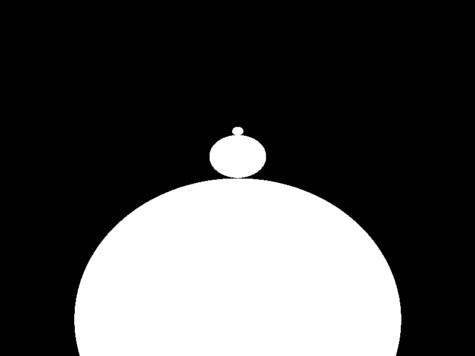
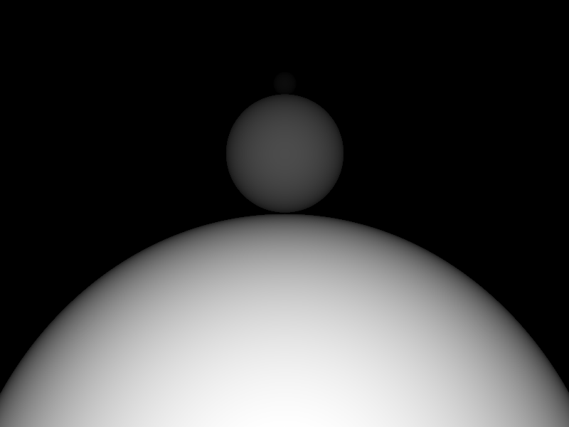

CS6620 - Ray Tracing for Graphics
Project 1 - Ray Casting
Results
Rendered in 0:00:09 with one thread, 0:00:03 with seven threads plus the main thread.
|  |
 |
| Rendered Image |
Normalized Z-Buffer |
Machine Specs
Running Windows 10 on a Bootcamped Mac
| Processor |
Intel Core i7-4870HQ CPU @ 2.50 GHz |
| RAM |
16GB |
Project Stumbling Blocks
For awhile, I got stuck because my spheres seemed slightly skewed and the camera
seemed farther away than it should have been.
The problem was that I forgot to take the square root of the discriminant when
calculating sphere-ray intersection so all t values were off.